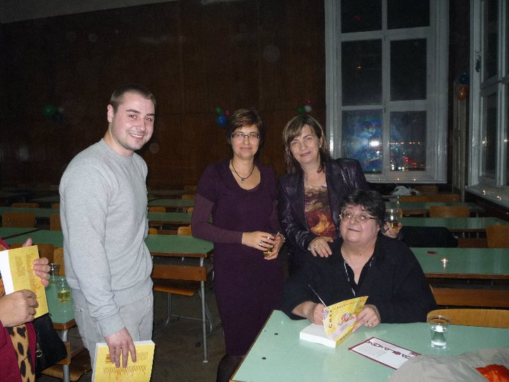
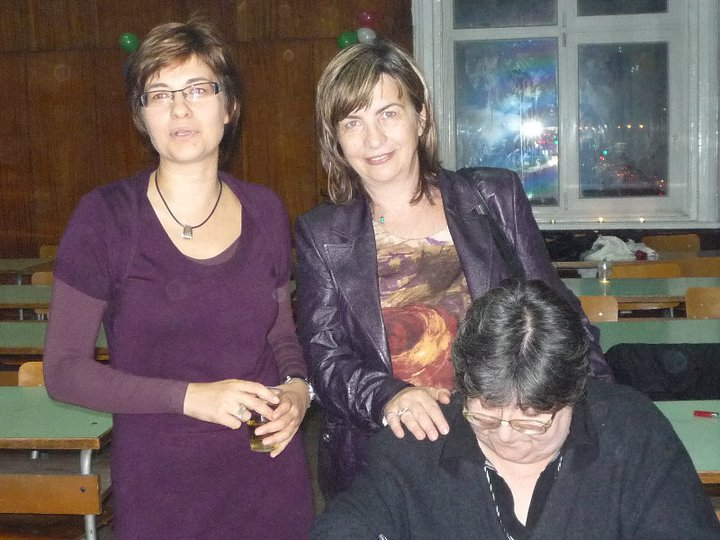

پذيرش > تریبون > گفت و گو > گلاب کاشان، گلاب بلغار/ گفتگو با لیودمیلا یانوا ؛ استاد زبان فارسی دانشگاه (...)


 گلاب کاشان، گلاب بلغار/ گفتگو با لیودمیلا یانوا ؛ استاد زبان فارسی دانشگاه صوفیه گلاب کاشان، گلاب بلغار/ گفتگو با لیودمیلا یانوا ؛ استاد زبان فارسی دانشگاه صوفیه
1 دی 1389 - فائقه اشکوری - نسخه قابل چاپ
تغییر برای برابری : لیودمیلا یانوا فارسی را قشنگ حرف می زند، با ضرب المثل ها و کنایه هایش، با شتاب، که مبادا از ذهنش جا بماند. بیشتر دوشنبه ها توی دفترش در بخش ایران شناسی در مرکز زبانها و فرهنگهای شرقی دانشگاه صوفیه «سنت کلیمنت اوحریدسکی»، برای شاگردانش فیلم ایرانی می گذارد. خودش هم می بیند و به کنایه ها بلند می خندد و گاهی توضیح می دهد. سینمای ایران را خوب می شناسد بهتر از خیلی ایرانی ها؛ و نویسنده های ایران را هم. ایرانی نیست ولی مسائل ایران را از نزدیک دنبال می کند.
حس غریبی است که بدانی در کشوری آن سوتر از ترکیه، نه خیلی دورتر، زنی بلغاری دغدغه حق مساوی زنان ایران را دارد. هر چند که شاید خود از این حق بهره مند است. از راه می رسد، چند جمله یا کاغذ در دامنت می نهد، طوفان می کند و ناپدید می شود. ولی همیشه همان جمله ها کارساز اند و کاغذها درست دست چین شده اند.
این بار داستان، «حق مساوی» است:
«وقتی صدایش می لرزید مردها می خندیدند. به خصوص آن هایی که سن شان بیشتر بود و به قول خودشون شکم دنیا را پاره کرده بودند. جوان ترها باز بهتر بودند. حتا گاهی یواشکی به اش محبت می کردند. یکیشان همیشه از صبحانه اش یک لقمه برایش درست می کرد. می گفت خواهر من هم حامله است... اصلا از جایش تکان نمی خورد. تو سختت نیست؟ بعد می گفت زن ها فکر می کنند با کار کردن حق مساوی با مردها پیدا می کنند....»
شک دارم که دقیقاً همین پاراگراف از داستان حق مساوی میترا داور، دلیل نام کتاب لیودمیلا باشد. ولی خودش می گوید: داستان تاثیر گذاری است. نام کتابم را چه باید می گذاشتم به جز "حق مساوی" یا همان "راونو پراویه"- به بلغاری؟
17 داستان کوتاه از زنان نویسنده ایرانی را در این کتاب به بلغاری برگردان کرده. لیودمیلا برای طرح روی جلد به گرافیست گفته بود زنی پرده نشین باید پرده قاجار را کنار زده باشد. حالا دختری زیبا با چشم و ابروی سیاه از پشت پرده ارغوانی پیداست. روی جلد به فارسی نستعلیق نوشته شده «حق مساوی» . و الفبای به هم پیوسته نستعلیق برای خواننده بلغار به همان اندازه تازگی دارد که فارسی زبانی کتاب را بگشاید یا اصلا همان پشت جلد باور کند که این حروف سیریلیک همان داستان های ایرانی است. پشت کتاب این جمله حشمت موید به بلغاری نوشته شده: «نثر پارس و زنان پارس تجربه تلخ مشترکی دارند: هر دو قرن ها سرکوب شده اند: زنان از مردان ستم دیده اند و نثر از نظم.»
نویسندگان این کتاب عبارتند از: فرخنده آقایی، شیوا ارسطویی، مهشید امیرشاهی، فریبا وافی، فرشته مولوی، مجبوبه میر قدیری، شهرنوش پارسی پور، زویا پیرزاد، فرشته ساری، ناهید طباطبایی، گلی ترقی، مینو فرشچی، زهره حکیمی، فریده خردمند، سپیده شاملو و مهری یلفانی. و لیودمیلا به جز با 2 نفر از آنان با بقیه شان در تماس است؛ از نزدیک. آن قدر که وقتی به ایران می آید دنبالش می آیند و با هم مثل دوستان دیرین دیدار می کنند.
لیودمیلا یانوا در سال 1972- 1351 هژده ساله بود که شاگرد زبان و ادبیات انگلیسی و همچنین فارسی در دانشگاه تهران شد. وی پژوهش هایش را در دانشگاه صوفیه «سنت کلیمنت اوحریدسکی» در رشته انگلیسی و در کنار آن فارسی ادامه داد. اکنون در مرکز زبانها و فرهنگهای شرقی واحدهای مختلفی را در زبان فارسی درس می دهد، ، دستور و قواعد نگارش، آوا شناسی و آوا نگاری فارسی، تئوری های سبک شناسی فارسی و تئوری ترجمه.
از کتاب های صادق هدایت شروع کرد ترجمه را، در کتابی با عنوان «سویتلینا ای سیانکا» که یعنی نور و سایه. که به دلایل مشکلات اقتصادی در کشور بلغارستان انتشار پیدا نکرد. و بعد با همکاران هندشناس وی نادژدا روزوا و والنتینا مارینوا کتاب مجموعه داستان های «زن شرق بودن...» را با برگردان بلغاری مجموعه داستان های معاصر زنان نویسنده ای از کشورهای مختلف شرقی از جمله سوریه، ترکیه، هند، کویت، پاکستان و ایران جمع آوری و منتشر کردند. در این کتاب داستان هایی از زهره حاتمی، شهرنوش پارسی پور، منیرو روانی پور، فریبا وافی، محبوبه میرقدیری، فرشته ساری؛ رویا شاپوریان و چند شعر از سیمین بهبهانی و فروغ فرخزاد به چشم می خورد که به جز شعر ها، دیگر مطالب را خانم یانوا به بلغاری برگردانده.
دو کتاب دیگر نیز در میان مجموعه کارهای خانم یانوا دیده می شود، داستان هایی به فارسی و برای سطوح مختلف دانشجویان زبان و فرهنگ پارس: «داستان معاصر ایران- 26 داستان کوتاه از 26 نویسندگان» و دومی «کتاب درسی فارسی» که این یکی برای آموختن زبان فارسی برای دانشجویان سال دوم درست کرده. کتاب درسی با کمک بخش فرهنگی سفارت ایران به چاپ رسیده و این مسئله را از طرح روی جلد می توان حدس زد.
خودش می گوید: «بلغارستان یکی از معدود کشورهایی است که برای آموزش زبان فارسی کتاب درسی زبان فارسی دارد: دیباچه ای بر زبان فارسی، نوشته ایوِتا زلاتارووا، و همچنین کتاب سال اول نوشته انجل اوربستوف»
.
وقتی برای مصاحبه از لیودمیلا وقت گرفتم با روی باز پذیرفت و در بوفه مرکز زبان و فرهنگهای شرقی همدیگر را دیدیم و درباره کتاب «راونو پراویه- حق مساوی» گفتیم و از کتاب های دیگرش، فیلم های ایرانی و خیلی چیزهای دیگر گفتیم.....
خانم لیودمیلا! وقتی با کتاب اول شما مجوعه 26 داستان به فارسی، برای دانشجویان ادب و فرهنگ پارس- آشنا شدم، به خودم گفتم که باید با شما گفتگو کنم. ولی وقتی کتاب دیگر شما "حق مساوی" را دیدم، با این طرح روی جلد فوق العاده ، نتوانستم دیگر صبر کنم.
 لبخند می زند: «جلد رو دخترم درست کرده،» با دست نیم دایره ای در هوا می کشد و پرده خیالی قاجار را پس می زند- «دخترم خوب فهمید چه می خواهم.» وقتی مجموعه «زن شرقی بودن» رو منتشر کردیم همه گفتند این خیلی خوبه باید جلد دوم داشته باشه. جلد دوم رو در کار مشترک ارائه ندادیم، گفتیم هر بخشی از دانشکده زبان های شرق باید روی زبان خودش جداگانه کار کنه. جلد دوم آن شد همین «حق مساوی». باید بگویم که صاحب انتشارات «رادار پرینت»، استاد زبان کردی آقای یاشار عبدالسلام اوغلو کتاب «زن شرق بودن» رو چاپ کرد و خودش اسم این کتاب رو گذاشت. لبخند می زند: «جلد رو دخترم درست کرده،» با دست نیم دایره ای در هوا می کشد و پرده خیالی قاجار را پس می زند- «دخترم خوب فهمید چه می خواهم.» وقتی مجموعه «زن شرقی بودن» رو منتشر کردیم همه گفتند این خیلی خوبه باید جلد دوم داشته باشه. جلد دوم رو در کار مشترک ارائه ندادیم، گفتیم هر بخشی از دانشکده زبان های شرق باید روی زبان خودش جداگانه کار کنه. جلد دوم آن شد همین «حق مساوی». باید بگویم که صاحب انتشارات «رادار پرینت»، استاد زبان کردی آقای یاشار عبدالسلام اوغلو کتاب «زن شرق بودن» رو چاپ کرد و خودش اسم این کتاب رو گذاشت.
چرا بیشتر از زنان روایت می کنید و از نویسندگان زن می گویید؟ آیا می توان گفت دغدغه شما مسائل زنان است؟
قبلآ در یک گفتگو گفته بودم که وقتی داستانهای نویسندگان زن رو می خوانم فکر می کنم اگر می خواستم بنویسم مانند آنها می نوشتم .علاوه بر این آن ها وقتی مشکلی در طی ترجمه پیش می آید همیشه به من کمک می کنند و کتابهایشان رو مدام می فرستند. در پیشگفتار کتاب 26 داستان نوشتم: «با وجود گرفتاری روزمره خویش آنها بی درنگ تماس می گرفتند و بار دیگر ثابت کردند که نویسندگان بزرگ قلبی بزرگ دارند.» مردان گویی دچار آداب و ترتیب اند. از من خیلی تشکر می کنند ولی ادامه نمی دهند. من هم اصراری نمی کنم. ولی با زنان نویسنده حتا اتفاق می افتد که داستانی پیش از آن که به زبان فارسی منتشر شود در اختیار من قرار می گیرد مثل داستان «سرما» ی فریده خردمند و «مهمان» ناهید طباطبایی که پیش از فارسی به بلغاری منتشر می شود. فکر می کنم داستانی از مینو فرشچی هم برای اولین بار به بلغاری چاپ شده. فیلمنامه شان «حاج خانم» دو ماه پیش در آخرین کتاب مرکز ما «خنده نم نم» به چاپ رسیده است. من در کتاب دیگرم، «26 داستان معاصر ایرانی» که به فارسی منتشر شده 13 داستان از زنان و به همین تعداد از مردان داستان آورده ام. که البته وقتی شمردم دیدم تعداد مساوی است. فرقی ندارد. شهرنوش پارسی پور برنامه مخصوصی رو در رادیو زمانه به این کتاب تقدیم کرد. در واقع من کاری نکرده بودم فقط بعضی از داستان معاصر ایران رو جمع آوری کرده بودم. وقتی کتاب معاصر سفارش می دادم به من نمی فرستادند و حتی به من گفته شده بود که در ایران ادبیات معاصر واجود ندارد. ولی اینترنت کار من رو آسانتر کرد.

یعنی فمینیست نیستید؟
بیشتر مردم وقتی کسی از فمینیسم حرف می زند فکر می کنند منظور اینه که زن باید فرماندار باشد! من مثل تهمینه میلانی جواب خواهم داد: «طرفدار دیالوگ هستم»، دنبال جنگ نیستم. نمی توانیم گفتگو با تمدن های دیگر داشته باشیم وقتی گفتگو با همسایه و خانواده و دوستان نباشد. حرف من یکیست با حرف فرشته از فیلم تهمینه میلانی « دو زن»: «می خواهم خودم باشم، بگذار رفیق باشیم.» رخشان بنی اعتماد در فیلم خود «ما نیمی از جامعه هستیم» درست می گوید. نصف جامعه را که نمی توان نادیده گرفت. در عوض برای چاپ کتاب های صادق هدایت که که 15 سال پیش از آن ترجمه کرده بودم ولی همچنان خاک می خورد و سفارت ایران هم حاضر نبود بودجه ای به این کار اختصاص دهد، همه جا گفته ام که دوستم و همکارم آقای عبدالسلام اوغلو برای چاپ و انتشار کتاب های صادق هدایت پا پیش گذاشت.
چطور؟ سفارت ایران با صادق هدایت مخالف بود؟
می گفتند این آقا خود کشی کرده. من گفتم «خوب چه خود کشی کرده باشه چه مرده باشه صادق هدایت هیچ وقت فراموش نمی شه. هیچ وقت در ذهن ها نمی میره.» در سایت رسمی هدایت، آقای جهانگیر هدایت «مجموعه آثار صادق هدايت به زبان بلغاري» را در دسترس قرار داده. و اطلاعاتی کوتاهی از این کتاب آنجا هم هست.
کتاب هدایت رو دوست من دکتر مارتا سيميدچيوا جمع آوری و ویرایش کرد، و هم پیشگفتارش رو نوشت. ممنونم که کار من و دوستم ندیده نمانده.
شما با سینمای ایران رابطه خوبی دارید.
بله، ادبیات و سینمای ایران را دوست دارم. عاشق فیلمهای تهمینه میلانی، پوران درخشنده و رخشان بنی اعتماد هستم: « ما نیمی از جامعه هستیم» و «گیلانه» که محشر است. در این فیلم نشان می دهد که مردها می جنگند ولی این زن ها هستند که تاثیر جنگ رو باید تحمل کنند. فیلم «دو زن» که گفته اند داستان یک زن است در واقع. زنی که با شوهرش دوست است در واقع و مثلا می گوید کلید ماشین رو بده، و او نمی پرسد حتا کجا می روی. و زن دیگری که نمی تواند حتا از تلفن استفاده کند. این دو زن با هم در یک کلاس بوده اند. به دوستانم که خیلی هم به ایران علاقه دارند می گویم فیلمهای ایرانی رو ببینند که می گویند نمی توانیم، این روسری ها و مقنعه ها تحمل کنیم، خفه مان می کنند.
چه باید کرد؟
خب هر کسی بهتر می داند خودش باید چه کار کند. من این اجبار را درک نمی کنم. این جا قبلا زن های بیوه وقتی نمی رفتند آرایشگاه تا موهایشان را رنگ کنند و مادربزرگها ، روسری سرشان می کردند. همه می گویند بابا من توی اون گرما با مقنعه مشکی و سرمه ای خفه می شم به خدا! مثل کیسه سیاه. (این جمله را مثل بچه ها ادا کرد و نمی دانستم چه بگویم؛ در این لحظه آدم احساس مبهمی دارد از این که شما چه می دانید چند میلیون دختربچه زیر سن بلوغ از کمبود «ویتامین د» و کمبود آفتاب رنج می برند...) فکر می کنم کارگردان و نویسندگان زن در آثارشان همه چیزی گفته اند. نمی شود در قرن 21 مثل قرن 7 زندگی کنیم (آتش بس« تهمینه میلانی»). باید به فکر نسل جوان باشیم.
پوران درخشنده در فیلم «رویای خیس» نشان داده. تهمینه میلانی در آغاز فیلم «زن زیادی»، رخشان بنی اعتماد در فیلمهای «بانوی آردیبهشت» و «خون بازی». داریوش مهرجویی هم در فیلم «سنتوری».
به جز داستان کوتاه از داستان های بلند فارسی هم استقبال می کنید؟
بله، «چراغ ها را من خاموش می کنم» و «ما عادت می کنیم» نوشته زویا پیرزاد، «جنسیت گمشده» فرخنده آقایی، و «چهل سالگی» و «خانکاری سپیده دم سفر» ناهید طباطبایی ، «طوبی و معنای شب» و«زنان بدون مردان» شهرنوش پارسی پور، و «ماه افسانه» مهری یلفانی، «و دیگران...» محبوبه میرقدیری. خانم امیر شاهی همه رمانهاش رو برایم فرستاده خیلی دلم می خواهد بخونمشان.
از میان داستان هایی که خودتان تا به حال ترجمه کرده اید کدام را بیشتر دوست دارید؟
کلا نمی توانم بگویم کدام بهتره. فکر می کنم کتاب های صادق هدایت رو خیلی دوست داشتم. از اول داستان داش آکل، آفرینگان و بوف کور.... و حاجی آقا که از اول دوست نداشتم و بعد از سالها وقتی دوباره خواندمش دیدم حاجی آقا شبیه نمایندگان پارلمان ما می ماند. این رو می گویند کلاسیک، یعنی همه جا صدق می کند.
داستان های این کتاب (راونوپراویه) و بیشتر داستان هایی که تاکنون ترجمه کرده ام حوادث زندگی روزمره است. داستان هایی که به آن احساس نزدیکی می کنید. نمی توانم درست بگویم کدام رو بیشتر دوست دارم. اما خیلی ها از مجموعه "حق مساوی" استقبال کردند. بچه ها می گفتند همه خانواده شان دلشان می خواهد این رو بخونند. شب بعد از معرفی کتاب ، پدر یکی از آن ها کتاب رو برداشت و دعوا شد چون مادرش هم می خواست آن رو بخواند (می خندد). به او گفته بودند چرا یکی گرفتی باید بیشتر می گرفتی. خیلی متاسفم که از منیرو روانی پور در کتاب اخیر داستانی نگذاشتم، حالا در کتاب های بعدی. کامران تلطف به منیرو روانی پور می گوید وکیل حقوق زنان در ادبیات.
و شما هم همین طور فکر می کنید؟
بله، بله. داستان « شب بلند» رو بچّه ها خیلی ناراحت شدند با خواندنش. درباره دختر بچه ای که با مرد نمی دانم چهل و چند ساله ای مجبور به ازدواج شده بود
شاید پرسش درستی نباشد که چرا فارسی را انتخاب کرده اید؟
چرا که زیبایی کشش دارد و اجتناب ناپذیر است. مثل این که بپرسیم چرا از گل رز بلغار خوشتان می آید.
فرخنده آقایی، میترا داور، ناهید طباطبایی، فرشته ساری و مژده دقیقی هم قبلا این رو از من پرسیده اند. در مصاحبه با سایت «مرور» هم گفته ام، قسمت بود. چون پدرم برای ماموریت دو انتخاب داشت: پاریس یا تهران؟ او گفت تهران. و دوستانش گفتند تهران؟ شما دیوانه اید. به ایران رفتیم.
چند بار به ایران رفته اید؟
من سه سال در ایران بوده ام. از سال 1972 تا 1975. (پیش از انقلاب) بعد 15 سال پیش برای اولین مجمع بین المللی استادان زبان فارسی آمدم تهران و بعد هم آخرین بار سه سال پیش بود فکر می کنم، برای نمایشگاه کتاب « پاهایم رو توی یک کفش کردم» و به مسئول رایزنی سفارت ایران گفتم می خواهم بروم ایران. مرد خیلی خوبی بود و برای روابط فرهنگی خیلی کارها اجرا کرد. به دعوت وی پوران درخشنده، مینو فرشچی و الهام حمیدی برای هفته سینمای ایران آمدند. وقتی تهران رفتم خانم مینو فرشچی مرا سوار ماشینش کرد و رفتیم دیدن پوران درخشنده و دولت آبادی. خیلی خوشحال شدم که اتفاقا رضا کیانیان و فرهاد آییش رو دیدیم. نتوانستم با خانم مجبوبه میرقدیری دیدار کنم. تلفنی حرف زدیم. اراک زندگی می کند و سرش خیلی شلوغ بود.
آیا در این سفرها مردم ایران تغییری کرده بودند؟
خوب فرق زیادی کرده بودند. من یک مقاله درباره زنان ایران قبل از انقلاب نوشته بودم. حالا یکی نوشته ام درباره زنان بعد از انقلاب. تمام دنیا متوجه رونق نویسندگی در میان زنان ایرانی شده اند و مجله «فوربز» از آن به نام پدیده یاد کرد.
چطور؟
خوب قبلا زنها که نباید حرف می زدند، نباید اسمشان تلفظ می شد، «ننه حسن» صدایشان می کردند. اما الان ظهور این همه نویسنده خوب رو در میان زنان می توان پدیده دانست که می گویند: حالا که باید روسری و چادر اجباری را تحمل کنیم، باشد، دست کم حرف می زنیم. زنان ایرانی به هر چیزی که بخواهند می رسند. خیلی شجاع هستند. حالا هم که می بینیم در بی بی سی اعلام کرده اند گفته اند از جایی کمک قبول نمی کنیم. قوی اند دیگر.
راستی در سایت مرور، داستانی درباره «دختر شاه پارس و پسر بلغار عاشق» به فارسی ترجمه کرده اید که به شدت دلچسب است. مثل کشف ریشه هایی مشترک می ماند؛ این که ناگهان بفهمی در کشوری نزدیک، مثل قمصر کاشان جشن گلابگیری دارند.
درباره این داستان، خانم میترا داور به من گفته بود یک داستان بلغاری برایشان ترجمه کنم به سایت مرور بفرستم. خیلی وقت پیش (در جوانی ام) یک داستان از نویسنده بلغاری خوانده بودم ولی اسمش یادم نیست با هم این سوژه. گوگل کردم و این داستان رو دیدم. این همان افسانه بود.
تعداد زیادی واژه مشترک میان فرهنگ ایران و بلغار پیدا کرده ام چشمه، لاله، جوراب، گلیم، هوا، میمون، صورت و .... چه احساسی دارید از این که راست به چپ می نویسید ؟
خوب یک ریشه هند و اروپایی مشترک بین بلغاری و فارسی هست و تعدادی هم واژه های فارسی که از طریق زبان ترک وارد زبان بلغاری شدند. عبارت های خیلی بیشتری هم هست- به یاد دارم مادرم می گفت "فیلان کیشیا" دقیقا یعنی "فلان کس"- یا مثلا "پاچا" که همان کله پاچه است و کاشکی که "کِشکی" تلفظ می شود، و به همان مفهوم. فارسی نوشتن من برایم مثل نقاشی بود. سه چهار ساعت می گذشت و من هیچ نمی فهمیدم. انگار توی مدیتیشن بودم. دختر و پسرم وقتی کوچک بودند سعی می کردند حروف رو کپی کنند.
آن ها چه طور؟ فارسی یاد گرفتند؟
نه یاد نگرفتند اما پسرم مسائل ایران رو دنبال می کند. وقتی درباره زنان ایران صحبت می کنم پسر تحت تاثیر قرار می گیرد. بعد از انتخابات ایران به من زنگ می زد که مامان ببین شیرزن های ایران چه کار کرده اند. توی کانال سی ان ان گزارش رو داشت می دید.
برخلاف مردم بلغار، پیداست که دانشجویان شما درباره ایران زیاد می دانند. خودِ شما که با اشاره و لطیفه و ضرب المثل پاسخ می دهید. چگونه ایران را به شاگردان خود می شناسانید؟ اصلا ایران را با فرهنگ مردمش می شناسید یا با قوانین حاکم بر این مردم؟ آیا تفاوتی میان این دو می بینید؟ درباره جنبش های اخیر هم چیزی به آن ها و دانشجویانتان می گفتید؟ مثلا می دانید که نسرین ستوده به خاطر پدیرفتن پرونده سنگسار و اعدام زنان الان زندانی است و در اعتصاب غذا؟
من درباره سیاست حرف نمی زنم. فیلم ها در اینترنت هستند. دانش جو ها فیلم ها را می بینند و خودشان می فهمند داستان از چه قراره. وقتی بچه ها داستان "کیسه سیاه" سپیده شاملو را خواندند گریه کردند و با "تیفوس" شیوا ارسطویی اشک در چشمانشان حلقه زد. دلشان می سوزد، شیر زن های ایرانی واقعاً شیر هستند. خیلی شجاع اند. هر روز که از خانه بیرون می آیند نمی دانند چه می شه و آیا سالم به خانه بر خواهند گشت یا نه. نه تنها به خاطر مسائل سیاسی که به خاطر چکمه- به خاطر این که مثلا شیک بوده اند. یک جوری شده که فرزانه میلانی می گوید: "رژ لب در ایران تنها رژ لب نیست، که پیامی سیاسی در بر دارد: رژ لب یک سلاح است." آزاده معاونی در کتابش "رژ لب، جهاد" را می گوید:
" ایرانی ها به گوشت تمایل دارند. به تن آن چنان می نگرند که کسی به غذا نگاه می کنند.... مهم نیست چگونه پوشانده شود: ساده، هنرمندانه یا وقیحانه. و زمانی که برای لحظه ای گوشه ای از آن از لباس بیرون می افتد، مهم این است که گوشت گوشت است.
این فشار حتا برای مردها هم این خیلی احساس بدی به همراه می آورد. مردها می گویند یک جوری رفتار می شود که انگار که ما حیوان هستیم. اگر به یک بچه هی بگویید این رو بپوش، آن کار رو نکن و... عصبانی می شه چه برسه به یک زن بزرگسال. هر کسی باشد از کوره در می رود. یک فیلم هست به نام «باغ فردوس ساعت 5 بعد از ظهر»- درباره دختری روانی. با تاکسی می رفت و پسرها با ماشین دیگر اذیتش کرده بود راننده می گفت حتمن شما دارید اشاره می کنید. دختر می گفت ببین، آرایش هم ندارم. به هر حال انگار دختر زندانی یا گناهکاره. البته که هر کس در این وضیعت دیوانه می شه دیگه.

تاریخچه فعالیت های معاصر زنان ما بر می گردد به 100 سال پیش. اگر بخواهیم منشا جدیدتری برای جنبش مطالبات زنان ایران پیدا کنیم بر می گردد به چند دهه اخیر. که یکی از فرازهای آن تشکیل «کمپین یک میلیون امضا برای برابری حقوق» بوده است. من هر چه در تاریخ شما گشتم به چنین جنبشی بر نخوردم. جنبش زنان شما بر می گردد به قرن 19 شاید- و «ندلیا پتکو وا»- یا همان بابا ندلیا- که در زمان امپراتوری عثمانی مدارس دخترانه باز می کرده است، کاری شبیه طوبا رشدیه و بی بی خانم استرآبادی - چگونه است که شما از برابری حقوق بر خوردارید ولی ما نیستیم؟ چه عاملی این برابری را در میان شما نهادینه کرد؟ نقش دولت ها را تا چه اندازه در این باره موثر می بینید؟ مثلا آیا کمونیسم بود که به زنان شما فرصت رشد داد؟
به جز ندلیا پتکووا زنان دیگری هم فعال بوده اند. بلغار 500 سال زیر سیطره عثمانی بود. با این که در اصل فرهنگ ما برابری بوده ولی زنان ما بعد از آزادی بلغار از دست ترک ها رشد کردند . تازگی ها مقاله ای خونده ام درباره این که چرا مردها باید در کلیسا کلاه رو از سر بردارند و زن ها برعکس، روسری بگذارند. می گفت خدا اول مرد را آفرید و بعد زن از پهلوی چپ مرد به وجود آمده. -سر تکان می دهد- من این رو قبول ندارم، واقعیت چیز دیگری است. کمونیسم هم به نوعی به اسم مبارزه با غربزدگی نمی گذاشت مردم رشد کنند. در کنفرانس بین المللی «آشتی از راه هنر، درک حجاب» که در مرکز ما برگذار شد یکی از سخنرانان اشاره کرد : «مدرنیته چون کمی دیرتر به شرق آمد اسمش شد «غربزدگی».
اما حرف من این است: اگر می خواهی توی خانه بمانی بمون ولی به دیگران نگو که توی خانه بمانند. چون ما به دنیا اومده ایم که درس بیاموزیم و تجربه به دست بیاوریم. با توی خونه ماندن نمی شود تجربه به دست آورد. حنا مخملباف فیلمی داره درباره افعانستان به نام "بودا از شرم فرو ریخت". خشونتی که از سوی دولت در بین مردم جا افتاده و حالا وقتی بچه ها با هم بازی می کنند به غیر از سنگسار کردن چیز دیگری بلد نیستند.
درباره کمپین «یک میلیون امضا برای برابری حقوق» چه می دانید؟
از نزدیک با آن آشنا هستم و بسیاری از فعالین حقوق زنان رو در ایران از نزدیک می شناسم.
خوتان آن را امضا کرده اید؟
نه خیر چون بعضی مودبانه خواهند گفت خانم محترم شما ایرانی نیستی.
خودتان زن ایرانی را چگونه می بینید؟ زن ایرانی کیست؟ به کدام سو می رود؟ منفعل و پذیرا است یا پویا و رزمنده؟ اصلا کدام را به دانشجویانتان معرفی می کنید؟
زن های ایران باید بتوانند انتخاب کنند. زنان ایرانی شجاع و مهربانند، مانند آب: هر چه بیشتر به آن فشار بیاورید، وقتی مجال آزادی پیدا می کنند سهمگین ترند. این ها واژگان فیلمساز جوان ایرانی سمیرا مخملباف است که زنان ایرانی را به درستی وصف کرده و من چیز دیگری نمی توانم به آن اضافه کنم. می توانم بگویم چنین چیزی درباره زنان تمام دنیا صدق می کند. اما زنهای نویسنده و کارگردان باید شنیده شوند.
من قضاوتی به شاگردانم نمی دهم. می گذارم از بین فیلم ها و داستان ها خودشان ببینند. نمی دانم کجا خوانده بودم که نباید قضاوت کرد باید نمونه بود.
فرهنگ بلغار برای مردم ایران ناشناخته است، همان طور که فرهنگ ایران برای بلغار. شما در این میان نقش یک پل را داشته اید، یک پل فرهنگی. این چه احساسی به شما می دهد؟
مردم بلغارستان فردوسی، سعدی ،خیام، خافظ رو کم و بیش می شناسند. ولی برای دانشجویان ما خواندن و یاد گرفتن آثار این شاعران معروف ایران سخت است. بعضی از آثار نویسندگان معاصر بلغارستان به فارسی ترجمه شده است و هم در بعضی از روزنامه های فارسی چاپ شده بود. و این کار رو یکی از همکاران قبلی ام و دوست صمیمی خودم هادی آزادی - خبرنگار و دکتر علوم تاریخی، انجام داده است. فاصله ها را باید با گفتگو و فرهنگ برداشت. وقتی آشنایان و دوستان من کتاب «حق مساوی» رو خواندند به من گفتند که زنهای ایرانی شبیه ما هستند.
چه کارهای دیگری در دست انجام دارید؟ و برنامه های آینده تان چیست؟
کتاب جدید مرکز ما «خنده نم نم» با آثار خنده دار نویسنده های شرقی که خانم والنتینا مارینوا جمع آوری کرد. همه گفتند که از بین داستان های داستان های ایرانی «خانواده آینده داداش» مهشید امیرشاهی و «مهمان» ناهید طباطبایی خیلی خنده دار هستند.
چند تا کار دیگر هم در حال انجام دارم. می خواهم صدای زنان ایران باشم، و آثار نظم و نثر ایران را معرفی کنم.ا=ا
ارسال به
بالاترین
،
توییتر
،
فریندفید
،
فیسبوک
در همين بخش :
 دهمین دورۀ مراسم تندیس صدیقه دولت آبادی ۱۳۹۲ دهمین دورۀ مراسم تندیس صدیقه دولت آبادی ۱۳۹۲
کارت پستالهایی به بهانهی هشت مارس و به یاد همهی مبارزین راه برابری
بیانیه بیش از 350 تن از مدافعان حقوق زنان به مناسبت روز جهانی زن؛ زنان هر روز فرودستتر میشوند
لباسی که برای تن ما دوخته اند! /اعظم بهرامی
چالشها و چشمانداز فعالیت مدنی زنان
ديگر بخش ها :
طرح یک میلیون امضا
|
مقالات
|
سایت نوشته ها
|
اخبار
|
گزارش كمپين
|
گفت و گو
|
علیه سکوت
|
كوچه به كوچه
|
نامه های شما
|
گزارش ویژه
|
گفتگو با اعضا
|
ویژه سالگرد کمپین
|
تصویر برابری
|
دل آرام علی
|
تریبون
|
مقالات
|
تاریخ شفاهی
|
خارج از چارچوب
|
کتابخانه
|
درباره کمپین
|
کمپین در شهرها
|
کمپین در بند
|
صدای تغییر
|
ویژه 22 خرداد
|
لایحه حمایت از خانواده
|
گالری
|
عشا مومنی
|
امیر یعقوبعلی
|
خدیجه مقدم
|
راحله عسگری زاده و نسیم خسروی
|
پروین اردلان،جلوه جواهری، مریم حسین خواه، ناهید کشاورز
|
زینب پیغمبرزاده
|
سعیده امین، سارا ایمانیان، محبوبه حسین زاده، ناهید کشاورز و همایون نامی
|
احترام شادفر
|
نسیم سرابندی زاده،فاطمه دهدشتی
|
وبلاگ مهمان
|
پرونده خرم آباد
|
دستگیری ها
|
مریم مالک
|
پرستو اللهیاری
|
مهرنوش اعتمادی
|
سمیه رشیدی
|
Other Languages
|
همراهان
|
«فراخوان کمپین ده روز با بهاره هدایت»
| English
|